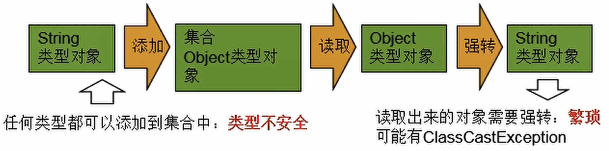
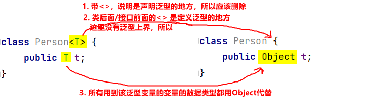
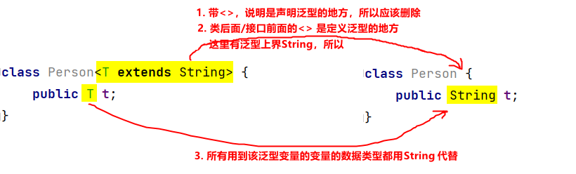
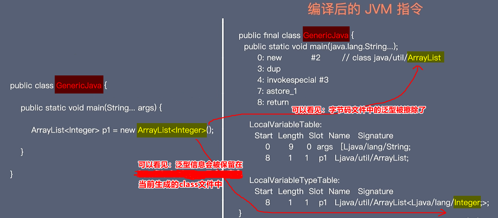

泛型语法糖
泛型语法糖
什么是泛型
泛型：Java语法糖。
定义：语法糖（Syntactic Sugar），也称糖衣语法。是由英国计算机科学家彼得·约翰·兰达(Peter J. Landin)发明的一个术语，指的是在计算机语言中添加的某种语法，这种语法对语言的编译结果和功能并没有实际影响， 但是却能更方便程序员使用该语言。
作用：通常来说使用语法糖能够减少代码量、增加程序的可读性，从而减少程序代码出错的机会。
泛型是Java SE 1.5的新特性，泛型的本质是参数化类型，也就是说所操作的数据类型被指定为一个参数。这种参数类型可以用在类、接口和方法的创建中，分别称为泛型类、泛型接口、泛型方法。 Java语言引入泛型的好处是安全简单。
泛型有什么好处
在Java SE 1.5之前，没有泛型的情况的下，通过对类型Object的引用来实现参数的“任意化”，“任意化”带来的缺点是要做显式的强制类型转换，而这种转换是要求开发者对实际参数类型可以预知的情况下进行的。对于强制类型转换错误的情况，编译器可能不提示错误，在运行的时候才出现异常，这是一个安全隐患。
泛型的好处是在编译的时候检查类型安全，并且所有的强制转换都是自动和隐式的，提高代码的重用率。
- 注意泛型的类型必须是引用类型,泛型不能是基本数据类型,必须是其包装类。
- 同一种泛型可以对应多个版本（因为参数类型是不确定的），不同版本的泛型类实例是不兼容的。
- 泛型的类型参数可以有多个。
- 泛型的参数类型可以使用extends语句，例如
<T extends superclass>。习惯上称为“有界类型”。-
<T extends superclass>上边界，泛型类是superclass的子类或其本身。 -
<T super subclass>下边界，泛型类是subclass的父类获取本身。
-
- 泛型的参数类型还可以是通配符类型。例如
Class<?> classType = Class.forName("java.lang.String")。 - 指明泛型类型之后,在集合类或接口中凡是定义类或接口时,内部结构使用到类的泛型的位置,都使用指定的泛型类型；如:
add(E e)—> 实例化之后:add(Integer i) - 如果实例化时，没有指定泛型的类型，默认是
java.lang.Object类型。
没有泛型的时候是这样：
1 | ArrayList al = new ArrayList(); |
这段代码看似功能强大，为什么呢？
因为它似乎能够往集合中添加各种类型的对象（int类型会被装箱成Integer对象类型），貌似一些老程序员也倾向于这么去做，而且他们可以理直气壮的告诉我理由：我这么做想存什么就存什么！先不否定这种说法，让我们继续，看看下面代码：
1 | String first = (String) al.get(0); |
往集合里面存值就是为了后期取出来用的，而不是 System.out.println(first) ，这里就产生了一个强制类型转换问题，而这种类型强制转换在编译器中是允许通过的，而写程序的人们会犯下无意间的错误，错误的进行了强制转换，导致程序运行失败。
强制类型转换导致的程序运行失败的原因是没有在编译期间对类型进行控制，任何类型都可以添加，编译器无法进行错误检验，埋下了安全隐患，例如：
1 | ArrayList al = new ArrayList(); |
没有泛型的程序面临两个问题：
- 编译器无法进行类型检查，可以向集合中添加任意类型的对象。
- 取值时类型转换失败导致程序运行失败。
没有泛型的程序导致的后果：
- 程序的可读性有所降低，因为程序员可以不受限制往集合中添加任意对象。
- 程序的安全性遭到质疑，可能会因为强制类型转换失败导致程序运行失败。
Java5泛型提供了一个更好的解决方案：类型参数（type parameters），即 泛型，使用泛型的程序改善上述代码如下：
1 | ArrayList<String> al = new ArrayList<String>(); |
到这里，通过前后对比，泛型的好处是不是很清楚了呢？为什么用泛型呢？
因为出现编译错误比类在运行时出现强制类型转换异常要好得多，泛型的好处在于提高了程序的可读性和安全性，这也是程序设计的宗旨之一。
什么时候使用泛型
使用泛型类是一件很轻松的事，集合框架中的类都是泛型类，用起来很方便。有人会想类型限制我们为什么不直接用数组呢？这个问题就好像问为什么集合优于数组，数组是固定的，而集合是可以自动扩展的。另外在实际中，实现一个泛型其实并不是那么容易。
大多数程序员对泛型的熟练程度仅仅停留在使用泛型上，像集合类中的List、Set和Map这些泛型集合用的很多，他们不必考虑这些泛型集合的工作方式和原理。那么当把不同的泛型类混合在一起使用时，或者对Java5之前的遗留代码进行衔接时，可能会看到含糊不清的的错误消息。这样一来，程序员就需要学习Java泛型来解决问题了，而不是在程序中胡乱猜测了。最终，部分程序员可能想要实现自己的泛型类和泛型方法。
提炼出泛型程序设计的三种熟练程度就是：
- 仅仅使用泛型。
- 学习泛型解决一些问题。
- 掌握泛型，实现自己的泛型。
怎么使用泛型
如何使用泛型听起来是一件很容易的事情，因为Sun公司的那些工程师已经做了很大努力，而需求总是会稍微苛刻一点的，需要解决因为缺乏类型参数模糊不清的问题，或者我们有必要实现自己的泛型来满足业务需求，所以学习和掌握泛型是很有必要的。最常见的自定义泛型的场景是 泛型类、泛型方法、泛型接口。
泛型类
格式：public class 类名<泛型类型1,…>
注意：泛型类型必须是引用类型
早期的时候，我们使用Object来代表任意的类型。向上转型是没有任何问题的，但是在向下转型的时候其实隐含了类型转换的问题。也就是说这样的程序其实并不是安全的。所以Java在JDK5后引入了泛型，提高程序的安全性。
1 | public class ObjectTool<T> { |
泛型类的测试
1 | public class ObjectToolDemo { |
输出结果：
1 | 姓名是：中国 |
泛型方法
格式: public <泛型类型> 返回类型 方法名(泛型类型 .)
1 | public class ObjectTool { |
1 | public class ObjectToolDemo { |
这样我们就可以传递任意类型的参数了。
泛型接口
格式：public interface 接口名<泛型类型1…>
1 | public interface Inter<T> { |
实现类在实现接口的时候，我们会遇到两种情况
第一种情况：已经知道泛型具体是什么类型的了
1 | public class InterImpl implements Inter<String> { |
第二种情况：还不知道泛型具体是什么类型的
1 | public class InterImpl<T> implements Inter<T> { |
Demo：
1 | public class InterDemo { |
通配符
1 | class Animal { |
泛型擦除
泛型擦除
泛型擦除的原因
原因一：JDK1.5及1.5之前都是没有泛型的概念的，JDK1.5之后引入了泛型的概念，为了与之前的JDK版本兼容，所以引入了泛型擦除的概念。
原因二：若对每个泛型类型都生成不同的目标代码，就会生成多份字节码文件。如：现有10个不同泛型的List。List<Integer> 、List<String> 、…，就要生成10份字节码，这样会造成不仅造成代码膨胀，而且一份字节码对应一个Class对象，会占据大量的JVM内存。引入泛型擦除之后，多种不同泛型的应用类型只会生成一份字节码文件。
泛型擦除规则
情况一：首先将 所有声明泛型的地方 都擦除，然后若 定义该泛型的地方 没有指定泛型上界，则 所有该泛型类型的变量的数据类型 在编译之后都替换为Object。
情况二：首先将 所有声明泛型的地方 都擦除，然后若 定义该泛型的地方 指定了泛型上界，则 所有该泛型类型的变量的数据类型 在编译之后都替换为泛型上界类型。

Demo1：
泛型擦除，List<Integer> 和 List<Double> 是同一个Class文件：List.class，同时 new ArrayList<Integer>() 和 new ArrayList<Double> 经过泛型擦除之后都是ArrayList对象。
Demo2：
编译期的泛型擦除，方法入参 List<Integer>和List<String>的翻新被擦除之后都是List，方法的签名相同了，无法进行方法重载。
泛型擦除规则的验证
方式一：通过Class对象验证：通过Class对象获取泛型信息，但是获取的泛型信息仅是占位符，并不是实际的泛型类型。
1
2
3
4
5List<Integer> list = new ArrayList<>();
Map<Integer, String> map = new HashMap<>();
System.out.println(Arrays.toString(list.getClass().getTypeParameters())); // 输出：[E]
System.out.println(Arrays.toString(map.getClass().getTypeParameters())); // 输出：[K, V]
// Class.getTypeParameters()获取当前Class对象中的泛型，以数据形式返回。方式二：通过反射机制验证：我们知道泛型只是用来对变量类型进行约束，这个约束只在编译阶段有效，在编译之后泛型就被擦除了。我们可以利用反射绕过泛型的约束检查。比如：
因此，如果可以绕过编译阶段对泛型的约束检测，那么就可以传入任何类型的变量（因为都可以向上转型为Object类型），这就想到了反射，反射可以在运行时获取Class对象并操作，不受编译器的限制：
1 | ArrayList<String> list = new ArrayList<>(); |
输出：
1 | [张三, 李四, 21] |
使用反射获取被擦除泛型信息的技巧
问：进行泛型擦除后的程序就能够在JDK1.5上正确执行了，那么还有必要保存原本的泛型信息吗？
答：会保存。所有类会先将自己类中涉及的所有实际泛型备份放在自己类中，然后再进行泛型擦除 【超级重要！！！】。
原理及获取方式：使用了泛型的类编译为class文件时会生成一个signature字段，而原本的泛型信息就被保存在class文件中signature指向的常量池中。

但是signature是一个private修饰的属性，不能直接访问，只能通过反射访问。因为class文件中会生成一些public修饰的方法能将访问signature属性并获取相关信息。所以，在实际中一般采用这些方法来获取泛型，而不是直接使用signature字段。具体方法为：
1 | class A<T, ID> { |
输出：
1 | class java.lang.String |
泛型擦除导致的两大经典问题的解决方案
泛型有3类：泛型类、泛型接口、泛型方法。但无论是哪种都会造成泛型擦除，而这也造成了问题：
问题1：由于泛型擦除，导致无法在 泛型类 中获取实际泛型类型
解决方法：使用匿名内部类
问题2：由于泛型擦除，导致无法在 泛型接口 进行 接口回调 之后获取实际泛型类型
解决方法：使用匿名内部类
泛型方法的泛型擦除导致的问题，目前实际开发中还没有遇到，遇到了再补充…
参考：
 微信
微信